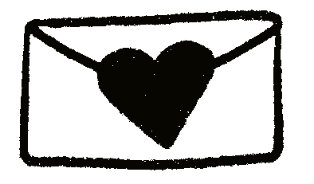

Anna Rizvi is a Pakistani American Web Developer & Multimedia Designer based in Washington, D.C.
Anna's work focuses on decolonizing design and technology. She hopes to create slowly and mindfully, building community and awareness along the way.
Anna graduated with a BIS from Virginia Commonwealth University in Information Systems & Biology, and a minor in Applied Mathematics. She's previously worked in IT & Marketing, and is currently a freelance Web & Brand Developer.
Outside of work, Anna enjoys exploring trails, film photography, reading, & illustrating.
